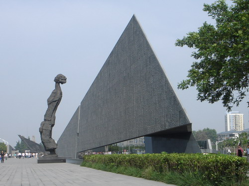

Coursework
The CUNY-BC China program offers the following possible courses:
1.ARTD 3108: Art of Ancient China Syllabus
2.BUSN 3175: Asian Business Syllabus
3.CORC 3202: Classical Philosophies of India and China Syllabus --- This course satisfies Pathways College Option Requirement
4.CORC 3206: Development of the Silk Road Syllabus --- This course satisfies Pathways College Option Requirement
5.CLAS 1110 (i.e., CORC 1110): Classical Cultures (China) Syllabus --- This course satisfies Pathways Flexible Core Requirement
6.HIST 3005: The Shaping of the Modern World Syllabus --- This course satisfies Pathways Flexible Core World Cultures & Global Issues Requirement
7.HIST 3534: Revolutionary China Syllabus
8.SPEC 1619: Intercultural Communication Syllabus
9.SPEC 2623: Business Communication (cross-cultural perspectives) Syllabus
10.CHIN 1010: Beginners Chinese-Level I Syllabus
11.CHIN 1020: Intensive Elementary Chinese-Level II Syllabus
12.CHIN 1030: Intensive Intermediate Chinese-Level III Syllabus
13.CHIN 2024: Advanced (Chinese) Language Skills Syllabus
14.TVRA 3871: Elements of TV Field Production Syllabus
-- TVRA 4849: International Documentary Production
-- TVRA 5010: Independent Projects
15.SPEC 7296X - Special Topic Course for Graduate Students
Note: Students can enroll in 1-2 courses (with only one language course). Each course is for 3 credits; But the Chinese courses (levels 1-3) are each for 4 credits; the Advanced Chinese Language Skills is for 3 credits.
All courses are taught by Brooklyn College faculty who are experts in the areas of study.
The courses are subject to sufficient enrollment, approval by Brooklyn College, and faculty availability. Students make their course selections in the Application Form. The final decision about which courses and how many courses can be offered is made 1-2 weeks after the application deadline or about 2 months before departure.

E-Permit for CUNY Students outside Brooklyn College:
Students from other CUNY campuses (such as Baruch, Hunter, City, City Tech, Queens, Lehman, etc) will need to apply for an e-permit. But you do not apply for e-permit until about one week after the application deadline when we have by that time decided what courses will be offered. When applying to our program, you just make your course selections in the application form.
During the 4 weeks in China, instruction for the courses is delivered in several venues: site visits, lectures & discussions, and online interactions (e.g., portal.cuny.edu). To ensure that students will be able to complete the coursework with quality and have time for self-exploration and side trips while in China, reading assignments are given a few weeks before departure and some online work also starts before departure.
Graduate Students:
Graduate students may register for a graduate-level Special Topic/Independent Study course (e.g., SPEC 7296X in communication if the student's department can accept the credit of the speech graduate-level course; or one graduate level speical topic/independent study course in the student’s department with approval of his/her department chair or graduate studies director). That graduate-level speical topic/independent study course is to be linked with one relevant undergraduate course offered during the program, but the graduate student(s) will be given extra reading assignments and research work.
The graduate student, when deciding to apply to this study in China program, should first discuss a research proposal with the graduate advisor of her/his home department, seek approval from her/his department chair or graduate advisor, and, after being accepted into the program, consult Prof. Lu (the Program Director) at CUNYinChina@brooklyn.cuny.edu, so as to develop a research topic related to the student’s area of study.

For sample graduate student research papers, click the following:
1.English Language Teaching in China
2.Comparative Study of Icons of Buddha & Christ
3.Minnie Vautrin’s Burden-Nanjing, China
(NEW!!)Asian Studies Minor: It only requires 12 credits. To satisfy those 12 credits requirements, students can choose from many courses in the departments of modern languages, art, economics & business, philosophy, religion, history, speech, political science, theatre, TV/Radio, education, etc. To declare Asian Studies as Minor, please contact Ms. Garrick at 718-951-5225 in 3439 Boylan Hall, or agarrick@brooklyn.cuny.edu